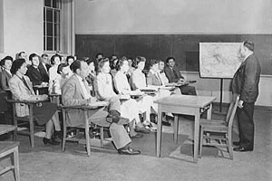
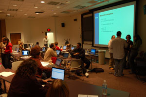

ClassroomsOf all of the different kinds of spaces in any college or university, the classroom is arguably one of the most central to the very idea of an institution of higher learning: it is a place for the exchange of knowledge and the sharing of new ideas. While the importance of the classroom perhaps has remained unchanged, the classroom itself has evolved over the years, as is evident in the case of the University of Maryland at College Park. Many of the classrooms at College Park are much the same today as they were when they were first built in the 19th and 20th centuries, but important changes have taken place. In addition to tables, chairs, and chalkboards they come equipped with wireless Internet access, video projectors, and laptops. |
Click "Play" button to view |
|
| 
Classroom at UMD, 1944 (Source: Library of Congress, Prints & Photographs Division, FSA-OWI Collection) |

Classroom at UMD, 2007 |
Are you visiting campus? Right-click to download the audio |
Also, more and more the boundaries of the physical classroom extend far beyond brick and mortar walls. In the early 1960s the use of closed circuit television at the University of Maryland allowed thousands of students to simultaneously share a front row seat in the same professor's lecture. In the seventies, for credit courses were broadcast weekly on public television, and students could also watch taped lectures in the library. Some of today's classrooms aren't physical places at all. In the 21st century students can complete course work and in some cases entire degrees without ever sitting in a traditional classroom. With the benefits of computers and high-speed Internet access, the postmodern virtual classroom is far superior to the correspondence courses of yesteryear. |
||